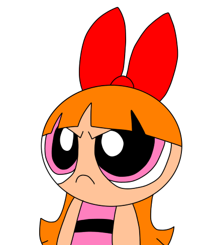
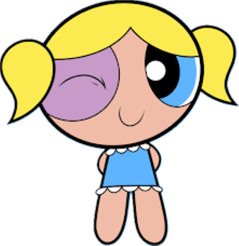
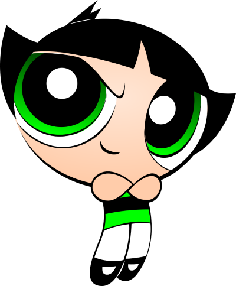

Blossom: The Leader
Blossom is the leader of the Powerpuff Girls. She is smart and always thinks ahead. She can freeze things with her ice breath. Blossom often helps her sisters stay on track. Her favorite color is pink, and she wears a big red bow on her head.

Bubbles: The Bubbly One
Bubbles is the cute and cheerful Powerpuff Girl with a big heart. She can talk to animals and is really funny. Even though she seems sweet, she is just as strong as any superhero when it’s time to save the day. Her favorite color is blue, and she loves making people happy.

Buttercup: The Tough One
Buttercup is the toughest Powerpuff Girl. She is always ready to fight with her strong attitude. Her superpower is super strength, and she’s fearless. Her favorite color is green, and she loves taking on challenges. Even though she seems tough, she cares a lot about her family and friends.